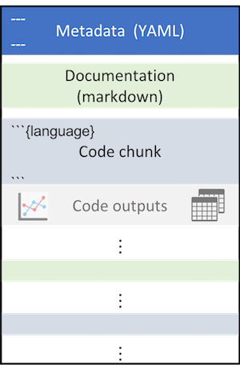

Text for documentation (markdown + other few tricks)
Code (chunks) with your analysis (R and friends)

Structure of a Quarto website
For a website, each webpage is going to be its separate quarto document. To create a website, you need one extra YAML file that will stitch all those pages together. Enters: _quarto.yml
_quarto.yml can be seen as a config file that provides website options, such as style, name, navigation tools and more. Here is its content for this website:
project:type: websiteoutput-dir: docswebsite:title:"Publishing Quarto websites with GitHub pages"navbar:left:-href: index.qmdtext: Intro-href: intro.qmdtext:"Quarto Websites"-href: github.qmdtext:"Publish on GitHub"-href: customize.qmdtext:"Do it in Style"- about.qmdright:-icon: githubhref: https://github.com/brunj7/quarto-web-exampleformat:html:theme:- cosmocss: styles.csstoc:true
Images
Did somebody say cat?? Sorry cute cat?! You can insert an image using the markdown syntax: 
A cat upside down
You can also customize alignment, size and more… add options with {fig-align="right" width=50%}
A smaller cute cat upside down… on the right
How about some math?
You can insert LaTeX math expressions into your page or document. What’s particularly nice about Quarto is that you can use the math formatting from LaTeX without having to buy into the entire LaTeX environment. For example, you might want remind your readers that
The Long Term Ecological Research (LTER) North Temperate Lakes (Madison, WI) research site has one of the longest time-series of Temperatures and Lake Ice Duration. The study and analysis of lake ice formation can inform scientists about how quickly the climate is changing, and are critical to minimizing disruptions to lake ecosystems. We can examine the ice duration of Lake Mendota and Lake Monona.
Researchers at the Niwot Ridge Long Term Ecological Research Site (NWT LTER) seek to study and monitor the health of the Colorado Rockies over time. Because of external factors like climate change, it’s more important than ever for scientists to understand how and why the Rockies are changing.
The American pika (Ochotona princeps) is a key species present at the NWT LTER. Despite their small size, pikas can be very informative about the health of the ecosystem. If pikas are more stressed, it can suggest that their habitat has declined in quality.
Adult pika at the Niwot site, Sara McLaughlin
Location of Pika Sampling Stations
library(sf)library(leaflet)# Prepare the datapikas_sf <-st_as_sf(x = nwt_pikas, coords =c("utm_easting", "utm_northing")) %>%st_set_crs("EPSG:26913") %>%st_transform("EPSG:4326")# Set the bounding box for the mapleaflet() %>%addTiles() %>%addCircles(data = pikas_sf, label =~station)
Note: it is best practice to load all your libraries at the top of your Quarto document. Here we chose to do it out of order to highlight which package is used for each html widgets